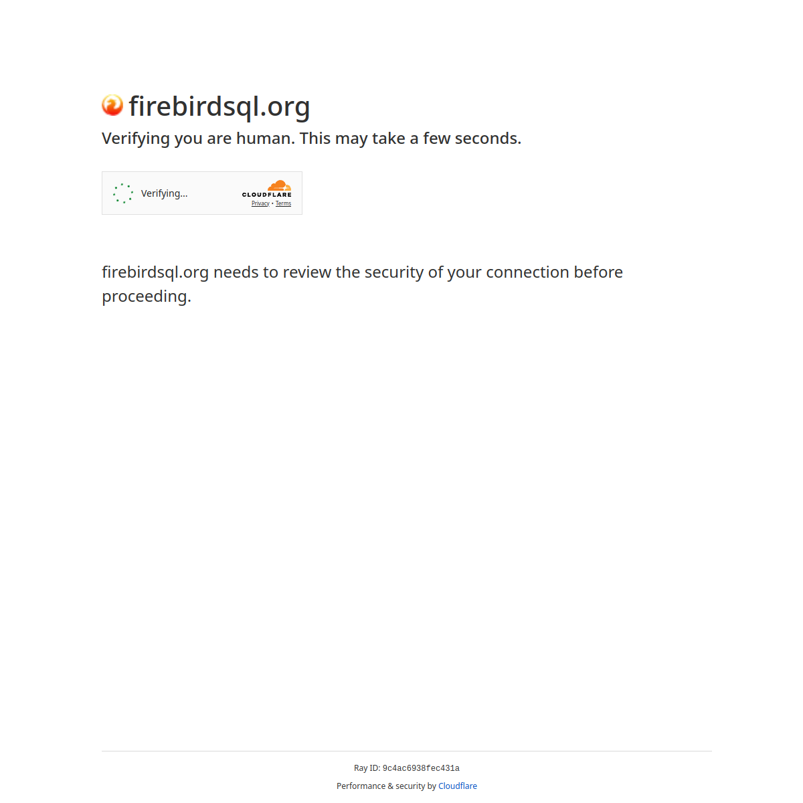

INSTALAÇÃO
O FirebirdSQL não é empacotado para Debian, RedHat ou outras distros, isso já aconteceu no passado, mas atualmente o FirebirdSQL inclui seu próprio instalador, mas antes de prosseguir com a instalação dele, vamos instalar a lib 'libtommath' que é uma dependencia, execute:
sudo apt install -y libtommath-devAgora vá até a página oficial do FirebirdSQL e baixe a ultima versão para Linux:

Digamos que tenha baixado em ~/Downloads, vamos descompactá-lo:
tar zxvf Firebird-5.0.3.1683-0-linux-x64.tar.gzE então alguns arquivos serão extraídos:
Firebird-5.0.3.1683-0-linux-x64/
Firebird-5.0.3.1683-0-linux-x64/manifest.txt
Firebird-5.0.3.1683-0-linux-x64/buildroot.tar.gz
Firebird-5.0.3.1683-0-linux-x64/install.shA descompressão irá criar uma subpasta, vamos entrar nela e executar o instalador:
cd Firebird-5.0.3.1683-0-linux-x64/E executo o instalador:
sudo ./install.shDurante a instalação lhe será questionado qual será a senha do SYSDBA, informe o que desejar, inclusive 'masterkey' se for usá-lo como desenvolvimento.
BANCO DE DADOS FIREBIRD - GRUPO FIREBIRD
O serviço de banco de dados FirebirdSQL é mantido por usuário criado com permissões restritas chamado 'firebird', isso é uma medida de segurança em sistemas posix para impedir que um hacker do mal aproveite-se de alguma falha neste serviço e tente escalar permissões maiores. Isso funciona muito bem, porém impede que outras pessoas se conectem localmente (não confundir com acesso ao localhost) a qualquer banco de dados porque apenas o usuário/grupo 'firebird' tem acesso a eles. Para que você possa contornar esta situação, seu login precisa estar no grupo 'firebird', então execute:
sudo usermod -aG firebird "$USER"
newgrp firebirdAgora, para conferir, execute:
getent group firebirdObserve o resultado do comando:
firebird:x:84:gsantanaSe o seu login aparaceu no grupo firebird então é um excelente indicativo que a operação foi realizada com sucesso.
BANCO DE DADOS FIREBIRD - SQL Client
Cliente de banco de dados ou SQL Client é a biblioteca que estabelece conectividade com o banco de dados, sem ela, nenhum aplicativo local ou remoto consegue conectar-se a base. Depois de instalado, confira se a mesma está presente no sistema:
ls -l /lib64/libfbclient.soCaso a resposta seja:
ls: não foi possível acessar '/lib64/libfbclient.so': Arquivo ou diretório inexistenteEntão a biblioteca não existe no PATH do sistema e isso pode ser um problema para outros programas acessarem base de dados, então vamos criar um link simbolico para ela:
[ -f /opt/firebird/lib/libfbclient.so ] && sudo ln -s /opt/firebird/lib/libfbclient.so /lib64/libfbclient.soAgora, confira novamente:
ls -l /lib64/libfbclient.soO resultado esperado é:
lrwxrwxrwx 1 root root 32 out 22 11:20 /lib64/libfbclient.so -> /opt/firebird/lib/libfbclient.soConcluímos aqui a instalação do SQL Client.
BANCO DE DADOS FIREBIRD - ALTERANDO A SENHA DO 'SYSDBA'
O SYSDBA é o equivalente ao 'root' no Linux ou 'sa' no MSSQL, isto é, tem plenos poderes e pode realizar qualquer coisa no banco.
Quando você instala o FirebirdSQL pela primeira vez, ele pergunta qual será a senha e partir daí, você só conseguirá alterá-la por meio do isql.
Vamos exemplificar porque eventualmente você poderá precisar alterar a senha do SYSDBA ou de qualquer outro usuário:
sudo /opt/firebird/bin/isql /opt/firebird/security5.fdbVocê não precisa de usuário+senha neste tipo de conexão porque ela é uma conexão local, mas não uma conexão 'localhost', ela é local no sentido de que você esta acessando a base diretamente sem a necessidade da SQL Client equivalente a uma conexão embarcada. Uma vez conectado, agora vamos fazer a alteração:
alter user SYSDBA password 'masterkey';
commit;
quit;Se não souber exatamente o nome do usuário que deseja alterar a senha, mas deseja varrer todos que começem com a letra 'A' então faça um select assim:
SELECT sec$user_name FROM sec$users
where sec$user_name like 'a%' ;Isso é mais eficiente do que usar SHOW USERS que mostraria todos os usuários.
BANCO DE DADOS FIREBIRD - PERMISSÕES
Se for copiar arquivos de banco de dados - geralmente .fdb - para seu sistema, não os copie para seu $HOME, pois o firebird não tem acesso lá, ele até poderia se ajustado de acordo, mas isso violaria a parte de segurança. Então sempre que for copiar arquivos .fdb para este servidor, localize uma pasta externa ao $HOME, por exemplo, /var/banco, se ele não existir, crie-o:
sudo mkdir -p /var/fdbVamos dar permissão com bitstick para que as subpastas herdem a pasta do pai, onde apenas apenas o usuário 'firebird' tem acesso de leitura e escrita e os demais(outros) somente leitura, execute:
sudo chmod 1775 /var/fdbPronto, agora você pode copiar arquivos .fdb para essa pasta, em alguns casos, depois que copiar, é muito provavel que também precise repetir este comando:
sudo chown -R firebird:firebird /var/fdb/*
sudo chmod -R 664 /var/fdb/*Pois o arquivo copiado pode ter outro 'dono' e este mantêm-se, ao invés de ter como dono o usuário 'firebird' e com isso, causando problema de acesso.
VARIAVEIS DE AMBIENTE
Essas variaveis serão usadas para ao inves de logar-se digitando a usuário e senha, elas sejam suprimidas, você pode achar que isso é um risco, mas o vamos colocá-la no nosso perfil onde somente nós mesmos e o root tem acesso, então não há riscos. Edite o arquivo ~/.bash_profile:
sudo editor ~/.bash_profileE acrescente as linhas:
export FIREBIRD_MSG=/opt/firebird
export ISC_USER=SYSDBA
export ISC_PASSWORD=masterkeySalve e feche o arquivo (Ctrl+O, Enter, Ctrl+X).
Agora, toda vez que abrir o terminal 'bash' as variaveis acima já estarão prontas.
Inclusive muitos serviços de rest/api são iniciados dessa maneira, usando variaveis de ambiente ao inves de agendar a execução no inicio do boot e os seus parametros porque esses comandos com o uso de uma 'ps auxwww' seriam revelá-los e se houverem parametros de usuário e senha, então seriam revelados.
Para testar, execute:
echo $ISC_USERObserve o resultado:
SYSDBAIndicando que a variavel já está com cnoteúdo.
VARIAVEIS DE AMBIENTE GLOBAIS
Também podemos criar variaveis de ambiente globalmente, neste caso, todos os usuários se beneficiam dessas variaiveis, faça isso quando todos os usuários e/ou serviços precisam se beneficiar dessas variaveis. Edite o arquivo /etc/environment.d/999-firebird.conf:
sudo editor /etc/environment.d/999-firebird.confA pasta /etc/environment.d contêm arquivos .conf que o sistema lerá durante o processo de boot, novamente colocamos o prefixo "999" porque a lista de arquivos é lida alfabeticamente e desejamos que nosso arquivo fique por ultimo. Depois acrescente as linhas:
FIREBIRD_MSG=/opt/firebird
ISC_USER=SYSDBA
ISC_PASSWORD=masterkeyNote que não precisamos do comando "export" porque isso não é um script, mas um arquivo de configuração que criará as variaveis de ambiente para nós durante o boot.
Agora salve o arquivo e feche o editor (Ctrl+O, Enter, Ctrl+X) e estará pronto, basta apenas reiniciar o sistema para que as modificações entrem em vigor, depois disso, se quiser testar, execute:
Para testar, execute:
echo $ISC_USERObserve o resultado:
SYSDBAIndicando que a variavel já está com cnoteúdo.
AJUSTANDO PATH
Vez ou outra, alguns programas são instalados em diretórios não convencionais, e isso inclui seus binários executáveis.
Um exemplo típico é o FirebirdSQL, que é instalado em /opt/firebird, e seus utilitários (como isql e gbak) ficam em /opt/firebird/bin.
O problema é que, ao tentar executar um desses utilitários, você precisa digitar o caminho completo e as vezes usando 'sudo', por exemplo:
sudo /opt/firebird/bin/gbak (...)Como bons programadores, sabemos que digitar caminhos longos repetidamente não é nada prático.
Para resolver isso, existem duas abordagens:
- Criar links simbólicos dos executáveis em /usr/bin; ou
- Acrescentar o diretório dos binários ao $PATH do sistema.
A segunda opção é a mais limpa e flexível, pois o caminho será reconhecido automaticamente por todos os usuários e sessões.
Para configurá-la, crie (ou edite) um script Bash em:
sudo editor /etc/profile.d/999-firebird-path.shE insira o seguinte conteúdo:
# Adiciona o Firebird ao PATH do sistema
# Torna o caminho acessível a todos os usuários de login
if [ -d /opt/firebird/bin ]; then
PATH="$PATH:/opt/firebird/bin"
export PATH
fiSalve e feche o arquivo (Ctrl+O, Enter, Ctrl+X).
Então, dê permissão de leitura global:
sudo chmod 644 /etc/profile.d/999-firebird-path.shNote que a permissão "644" não dá poder de execução, e a ideia é essa mesma, o próprio sistema se encarregará de carregá-lo por uma sucessão de scripts, não precisando de "alguém" para executá-lo. Para uma outra pessoa poder executar manualmente, seria:
source /etc/profile.d/999-firebird-path.shAgora vamos conferir o PATH, execute:
echo $PATHE observe o resultado:
/usr/local/sbin:/usr/local/bin:/usr/sbin:/usr/bin:/sbin:/bin:/usr/games:/usr/local/games:/snap/bin:/opt/firebird/binSe /opt/firebird/bin apareceu então este tópico foi concluido com sucesso.